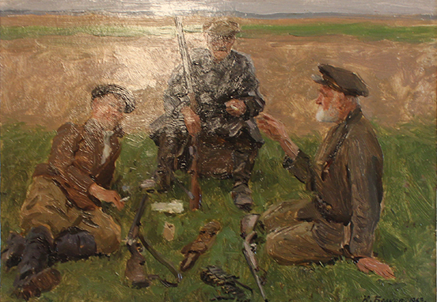
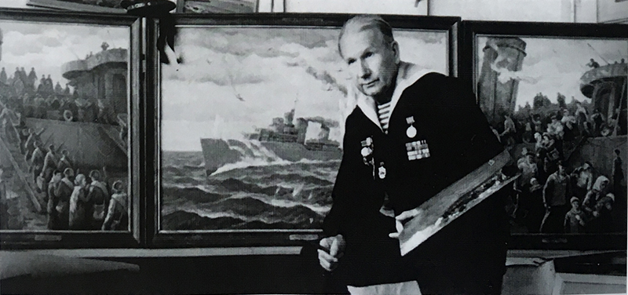

Юрий Сергеевич Белков родился 1 июля 1924 года, в деревне Желобново Талицкого поселения. После окончания Ивановского художественного училища (1953) жил и трудился в республике Марий Эл.
В изобразительное искусство Юрий Сергеевич вошел как мастер портрета и пейзажа. Шириной тематики, красатой и гормонией живописи, оптимистичным мировоззрением он внес огромный вклад в формирование Марийской художественной школы. Художник стоит у истоков профессионального изобразительного искусства и является одним из основателей Марийского регионального отделения союза художников России (1961). Яркая и неординарная личность - Юрий Сергеевич, отличался не просто скромностью, а даже некоторой застенчивостью, добрый взгляд, голубые глаза, несколько глуховатый голос распологают к доверию, он всегда выслушает и поймет собеседника. Но за этой сдержанностью, добротой и мягкостью таится натура твёрдая и целеустремлённая.
С детских лет он проявлял повышенный интерес к окружающему миру, пытался докопаться до сути вещей, и все вокруг видел в цвете, в цветовой гармонии. Замечал, как менялись картины в зависимости от освещения - от рассвета до заката. Иным, загадочным, но притягательным было ночное небо с его мириадами звезд и планет. Всё это тревожило душу мальчика, подхлёстывало искать ответы в книгах. Простой карандаш, а потом и цветныые карандаши появились в егоруках раньше, чем он научился писать. Юра с ранних лет увлёкся рисованием. В школьные годы он состоял в редколлегии "Стенной газеты", добросовестно выполняя свои обязанности. Как все художники 1950-60 годов, Белков много ездит по республике, изучая природу края, быт деревень. Выходец из крестьянской семьи, он легко находит темы для общения с местными жителями. Он с увлечением в молодости писал этюды понравившихся мотивов, чистые пейзажи и окраины деревень с группами женщин, обращался к сюжетным композициям. "На сенокосе" и "Трактористы" (1959), "Доярки" (1961), привлекают обликом и характерами героев и героинь.
С первых лет учебы в художественном училище Юрий Белков полюбил пейзажную живопись. С удивлением молодой художник находил"левитановские мотивы" в самой природе. Оказавшись в Йошкар-Оле, художник постигал красоту марийскаой земли, разнообразную и привлекательную во все времена года. Живописец пишет солидные по размеру этюды, добивается ясного композиционного решения, картинной завершенности. Изюминкой каждого этюда, его душой является поэтическое осмысление мотива, нежная живопись, умение почувствовать и передать состояние природы.
Морские пейзажи - марины - занимают в творчестве Белкова, быть может, и не главное место, но вне всякого сомнения, в них живет душа моряка. У живописца было время прочувствовать и осмыслить бесчисленные нюансы морской стихии. Даже в самые трудные периоди своей жизни художник не расставался с кистями и красками, не забывал об искусстве он и во время войны. На флотах Северном и Черноморском Юрий Белков воевал и служил в общей сложности девять долгих лет. Уже после войны Юрий Белков запечатлил в этюдах и пейзажах морскую стихию, и не только Черное море, но и Тихий океан. Пейзажи "Утро в морско порту" (1982), "После шторма" (1983), триптих "Баллада о лидере "Ташкент"(1990-1995г.)" и многие другие воспевают красоту и непостоянство моря.
Юрий Сергеевич никогда не забывал свою малую родину, любил гостить в родных местах, вдохновенно работал во время отдыха. Среди полотен картинной галереи немало узнаваемых для таличан мест. Вологодская земля подсказала идею создания большого эпического полотна - Родина" (1987). Здесь проходит Волго-Балтийский канал. В глубину пространства, разрезая берега, несет обильные воды река Шексна, вокруг реки раскинулись заливные луга и лесные массивы. Взгляд на ширь земли и водную гладь с высоты птичьего полета, тяжелые дождевые облака ксиливают романтический образ живописного полотна, подчеркивают величие природы.
Юрий Сергеевич Белков отличается удивительной щедростью души. В 2000-2002 годах он подарил хемлякам более 170 живописных произведений, которые легли в основу Талицкой сельской картинной галереи. В 2006 году он увез на малую родину картину "Свидание с Дионисием". Но случилось так, что осенью 2015 года, Белков Юрий Сергеевич внезапно ушёл из жизни, не успев реализовать многие свои планы. Но свершить самое главное своё дело он всё же успел: завещал Талицкой картинной галерее грандиозное наследие - 189 картин.
С первых лет учебы в художественном училище Юрий Белков полюбил пейзажную живопись. С удивлением молодой художник находил"левитановские мотивы" в самой природе. Оказавшись в Йошкар-Оле, художник постигал красоту марийскаой земли, разнообразную и привлекательную во все времена года. Живописец пишет солидные по размеру этюды, добивается ясного композиционного решения, картинной завершенности. Изюминкой каждого этюда, его душой является поэтическое осмысление мотива, нежная живопись, умение почувствовать и передать состояние природы.
Морские пейзажи - марины - занимают в творчестве Белкова, быть может, и не главное место, но вне всякого сомнения, в них живет душа моряка. У живописца было время прочувствовать и осмыслить бесчисленные нюансы морской стихии. Даже в самые трудные периоди своей жизни художник не расставался с кистями и красками, не забывал об искусстве он и во время войны. На флотах Северном и Черноморском Юрий Белков воевал и служил в общей сложности девять долгих лет. Уже после войны Юрий Белков запечатлил в этюдах и пейзажах морскую стихию, и не только Черное море, но и Тихий океан. Пейзажи "Утро в морско порту" (1982), "После шторма" (1983), триптих "Баллада о лидере "Ташкент"(1990-1995г.)" и многие другие воспевают красоту и непостоянство моря.
Юрий Сергеевич никогда не забывал свою малую родину, любил гостить в родных местах, вдохновенно работал во время отдыха. Среди полотен картинной галереи немало узнаваемых для таличан мест. Вологодская земля подсказала идею создания большого эпического полотна - Родина" (1987). Здесь проходит Волго-Балтийский канал. В глубину пространства, разрезая берега, несет обильные воды река Шексна, вокруг реки раскинулись заливные луга и лесные массивы. Взгляд на ширь земли и водную гладь с высоты птичьего полета, тяжелые дождевые облака ксиливают романтический образ живописного полотна, подчеркивают величие природы.
Юрий Сергеевич Белков отличается удивительной щедростью души. В 2000-2002 годах он подарил хемлякам более 170 живописных произведений, которые легли в основу Талицкой сельской картинной галереи. В 2006 году он увез на малую родину картину "Свидание с Дионисием". Но случилось так, что осенью 2015 года, Белков Юрий Сергеевич внезапно ушёл из жизни, не успев реализовать многие свои планы. Но свершить самое главное своё дело он всё же успел: завещал Талицкой картинной галерее грандиозное наследие - 189 картин.

Охотники на привале" (1952), где использована композиционная схема В.Г.Перова, привлекает юмором и добротой отношения художника к охотникам, которые любят рассказывать свои байки. Героями картины стали известные земляки художника, в том числе его отец и дядя.

В составе редколлегии "Боевая вахта" Белков С.Ю. нижний ряд слева

За работой над картиной "Баллада о лидере "Ташкент" (1990-1995г.)